El módulo EVAL de cada libro contiene un listado de preguntas que el profesor posteriormente puede utilizar para crear evaluaciones para los alumnos. Puede utilizar las preguntas ya creadas directamente, modificarlas o incluso crear nuevas. El formato de salida de las mismas puede ser .pdf o Word de cara a su impresión y posterior entrega a los alumnos.
Para todo lo anterior, hay disponible un editor de texto versátil (CKEditor) que permite la modificación o creación desde cero de cualquier pregunta. Este manual tiene como objetivo el describir y orientar cómo se pueden realizar todo lo anterior mediante este editor y el módulo EVAL.
Comenzaremos con la descripción de las herramientas que vamos a utilizar en Oneclick. El editor de las preguntas en nuestro caso está dentro del entorno CAT, pero en el caso del usuario final (el profesor) está dentro del entorno web del propio libro.
También explicaremos el manejo de estas herramientas de cara a incluir en los libros web los contenidos que facilita la Editorial.
Por último, describiremos en detalle las funcionalidades disponibles y como afectan al resultado final, la impresión del documento (.pdf o Word), para maximizar la satisfacción del profesor de cara al uso de las preguntas generadas con el módulo EVAL.
El módulo EVAL para crear las unidades y preguntas está dentro del entorno CAT.
Las capturas de pantalla que vamos a incluir son de la aplicación Chrome, pueden variar algo en otros navegadores pero son básicamente iguales.
Son necesarios dos logins uno el de la Editorial (en el caso de ejemplo EDELVIVES) y otro el del propio usuario.
En el primero basta con introducir usuario y contraseña apropiados (diferentes de los del usuario):
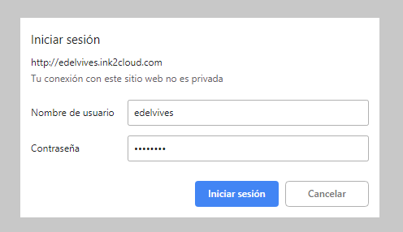En el segundo hay que introducir el repositorio (svn) del libro, y el usuario y contraseña del usuario concreto (facilitado por Oneclick).
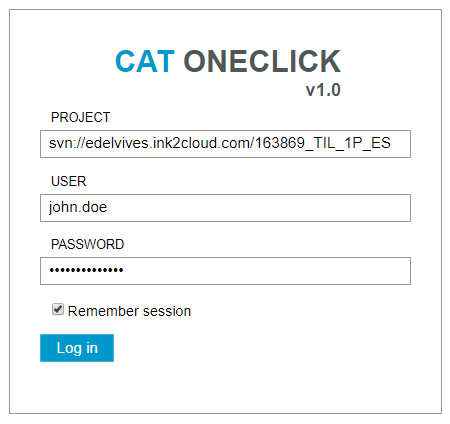El repositorio de cada libro figura en el drive de control de cada proyecto (en la imagen figura uno de ejemplo para ver la estructura del mismo). Es aconsejable, siempre que sea seguro por ser un ordenador no compartido, marcar la opción “Remember sesion”. Dura un día y facilita el trabajo evitando tener que repetir acciones.
En la pantalla inicial del entorno CAT tenemos el acceso a los diferentes módulos. En la imagen está remarcado el del módulo EVAL.
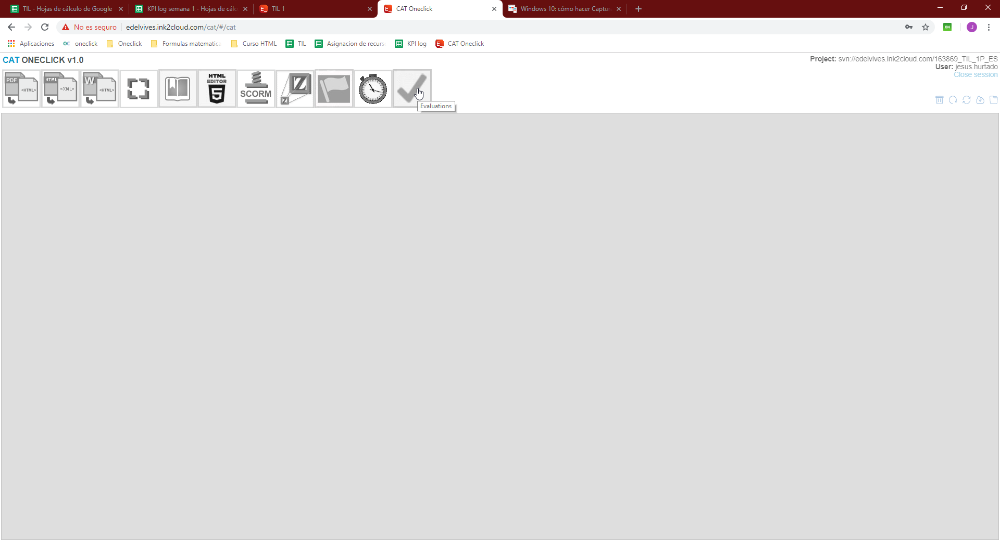 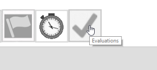Pero antes de comenzar lo primero que tenemos que hacer, para evitar posibles conflictos de versiones, es actualizar el repositorio. En la parte superior derecha de la pantalla tenemos:
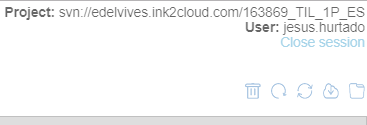Para poder pulsar el icono hay que activar esta zona de la página. Hay que pasar con el puntero del ratón por encima de nuestro usuario (no es necesario hacer clic) de este modo se habilita el puntero para poder pulsar update workingcopy, se nota porque el puntero cambia a “mano” (imagen anterior).
Cuando pulsamos se abre una pestaña nueva en el navegador con un resumen del proceso.
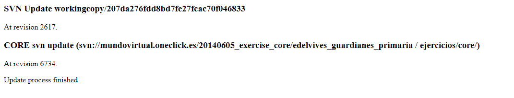Tras verificar que no aparecen errores en el mismo, podemos continuar con el módulo EVAL.
Pulsamos en el icono del modulo
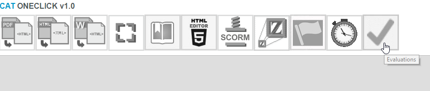Se activa en color azul y tenemos a nuestra disposición una serie de botones en una barra naranja.
A la izquierda de la pantalla:
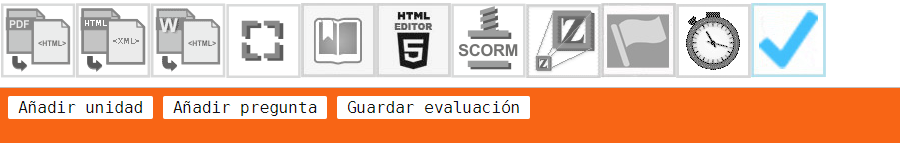Añadir unidad: añade una unidad al libro, dentro de la misma están las preguntas (evaluaciones)
Añadir pregunta: añade una pregunta dentro de una unidad.
Guardar evaluación: guarda el trabajo que llevamos realizado (es conveniente realizar guardados periódicos para evitar posibles pérdidas por error). Se realizan “commit” automáticos al repositorio para que todo quede actualizado.
La descripción de los botones ya nos muestra la estructura del módulo EVAL que determina el método de trabajo. Cada libro se divide en unidades y estas en preguntas. Nuestra misión es trasladar las preguntas facilitadas por la Editorial de la manera más fiel posible al módulo EVAL.
A la derecha:
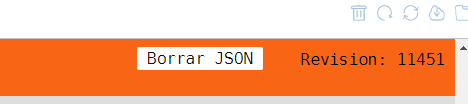Borrar JSON: Este botón, situado a la derecha borra todo el trabajo realizado. Es conveniente usarlo, solo si estamos muy seguros. A su lado figura el número de revisión con carácter informativo.
Básicamente, en el módulo EVAL, creamos las unidades y las preguntas que aparecen posteriormente en el libro que los profesores utilizan.
Pulsamos el botón “Añadir unidad”
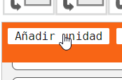Y se crea la misma
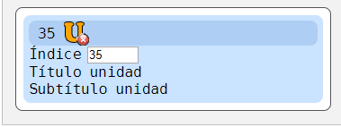Como vemos se puede seleccionar número de índice (en el ejemplo 35) pero con los botones de bajar-subir se puede modificar a cualquiera que deseemos, por ejemplo el 1.
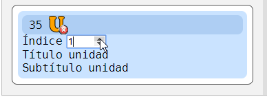Pulsando en “Título unidad” (el ratón al pasar por encima toma forma de cursor de mover).
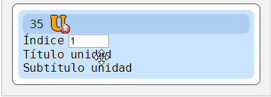Al pulsar aparece esta pantalla:
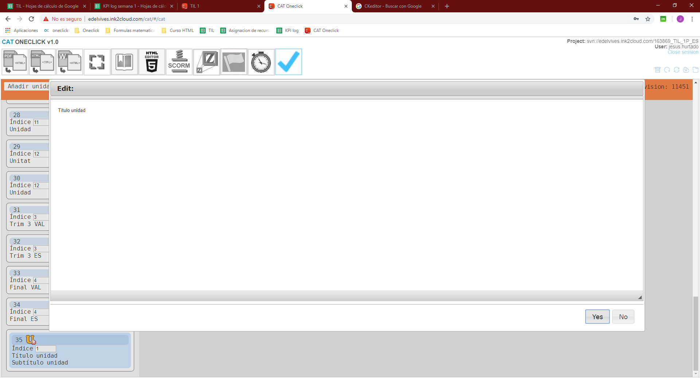 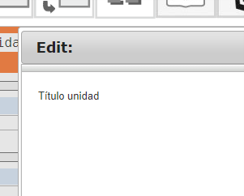Damos título a la unidad. Habitualmente debemos poner el título de unidad que viene en el fichero Word facilitado por la Editorial. Si no viene debemos comprobar el título de la misma que aparece en el índice del fichero .pdf del propio libro (está en la carpeta PDF del repositorio del libro).
Cambiamos el texto por el que corresponda y pulsamos “Yes”
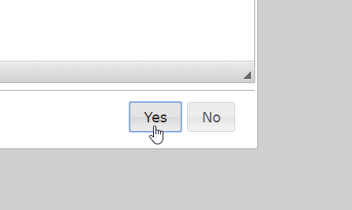Si hubiera que poner subtítulo, pulsaríamos sobre “Subtitulo unidad”, lo escribimos y pulsamos “Yes” del mismo modo. Habitualmente no hay que poner subtítulo, por ello lo que haríamos es borrar el texto que aparece por defecto y pulsar “Yes” de ese modo quedaría sin subtitulo.
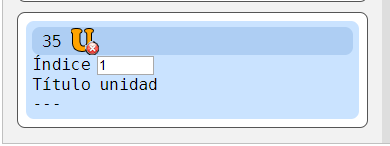Los tres guiones (- - -) identifican esta situación (la unidad no tiene subtítulo) y son el botón que usaríamos si posteriormente necesitamos poner un subtítulo. El título funciona de la misma forma.
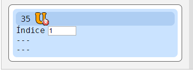Los tres guiones (- - -) superiores indican que hemos borrado el título y los inferiores como ya hemos visto el subtítulo.
El botón rojo con una x blanca al lado de la U naranja
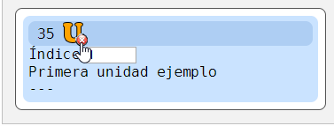Es el botón de eliminar unidad. Si lo pulsamos se elimina la unidad que hemos creado (por ejemplo si creamos una unidad de más) es un botón que debemos manejar con prudencia.
Las unidades también se pueden mover, con el ratón pinchamos en la deseada y la cambiamos de sitio en la lista. La posición en que va a quedar se resalta en verde.
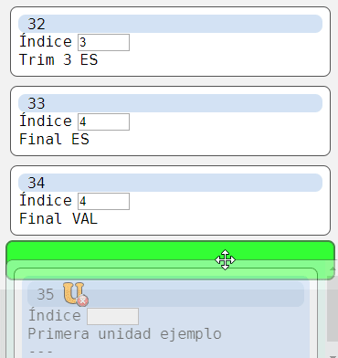Podemos reorganizarlas como deseemos.
Ya tenemos creada la primera unidad y puesto su título.
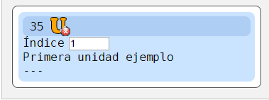La seleccionamos (se nota porque se destaca azul y tiene un tamaño mayor que el resto).
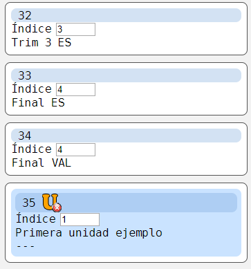Y creamos la primera pregunta, botón añadir pregunta
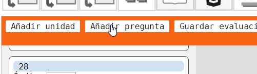 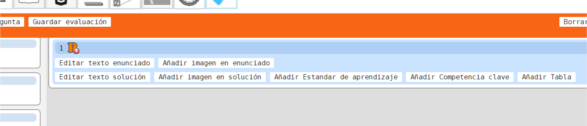Editar texto enunciado y solución: inicia el CKEditor, que es el programa que utilizamos para dar la forma más parecida posible a la indicada en los documentos Word de la Editorial a las preguntas.
Añadir imagen en enunciado y solución: permite añadir una imagen al enunciado y a la solución pero de manera general, se sitúa debajo del texto y no se integra en el mismo. Para poder incluir imágenes integradas en el texto tenemos que trabajar directamente sobre CKEditor.
Añadir Estandar de aprendizaje: aquí se introducen los estándares de aprendizaje facilitados para cada pregunta por la Editorial.
Añadir Competencia clave: para incluir las competencias clave facilitadas para cada pregunta por la Editorial.
Añadir Tabla: al pulsar este botón se crea una tabla para incluir la rúbrica facilitada por la Editorial.
Para una mejor comprensión de todo esto aquí tenemos una pregunta ejemplo incluida en un Word facilitado por EDELVIVES.
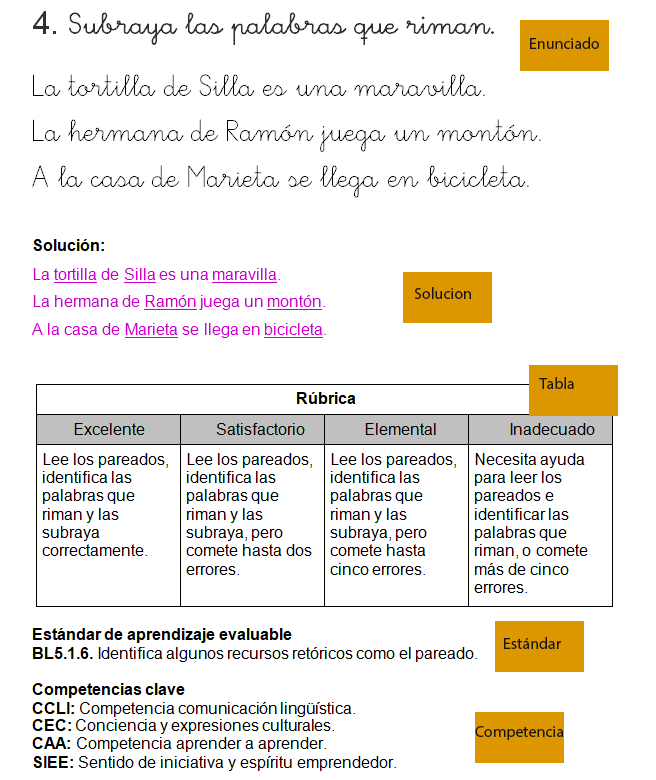El texto e imágenes de enunciado y solución se realizan principalmente con el CKEditor y lo vamos a tratar en un apartado específico. Por ello pasamos al resto de elementos.
A pulsar el botón de “Añadir Estandar de aprendizaje” aparece la siguiente pantalla:
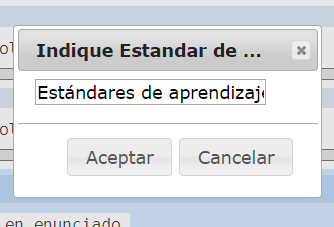Simplemente hay que copiar y pegar del Word original el/los estándares que figuran en la pregunta en concreto en el campo donde está escrito “Estándares de aprendizaje” borrando este texto. Y después pulsar “Aceptar”. Si sólo hay uno lo hacemos una vez, si hay más repetimos y se van añadiendo uno debajo del otro. En el ejemplo propuesto aparece:
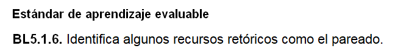Únicamente copiaríamos y pegaríamos “Identifica algunos recursos retóricos como el pareado.” Sin el número inicial y verificando que también se copia el punto final de la frase. Quedaría así:
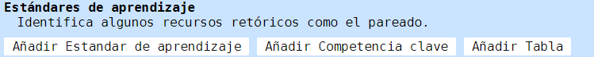Si necesitáramos modificarlo por haber cometido un error, basta con pinchar de nuevo sobre el texto que acabamos de introducir y aparece la pantalla de posibilidad de edición.
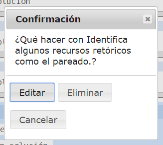Pulsando el botón “Editar” podemos cambiarlo, en lugar de hacerlo directamente en el campo de texto como la primera vez, aparece una ventana de edición de texto. “Eliminar” elimina lo introducido completamente.
Es importante, en caso de haber varios estándares, respetar el orden de los mismos. También debemos fijarnos en que no se producen caracteres no deseados por el copia-pega directo. Si sucede esto último, borramos los erróneos e introducimos correctamente a mano.
Al pulsar “Añadir Competencia clave”:
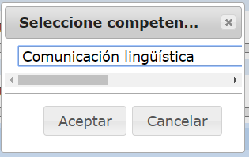Es un menú desplegable donde aparecen todas las posibilidades:
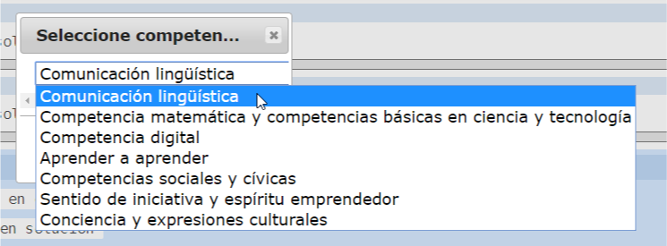Elegimos y pulsamos aceptar. Al igual que los estándares, si hay más de una competencia pondremos todas en el mismo orden que vienen en el Word original. En el ejemplo:
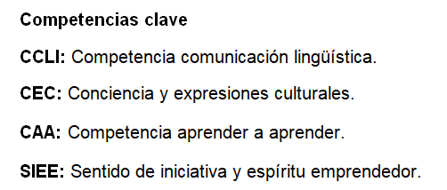Vienen cuatro, por lo que hay que repetir cuatro veces la operación. Este sería el resultado.
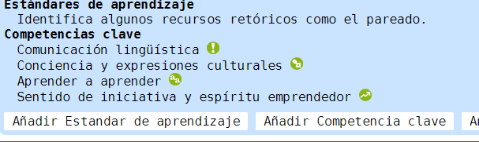También de la misma forma que en los estándares, si queremos eliminar una por haber cometido un error, pinchando directamente sobre el texto de la misma, nos aparece el cuadro de dialogo para poder eliminarla.
Al pulsar “Añadir Tabla”:
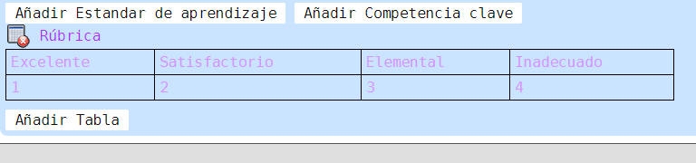Vemos que tiene casi la misma estructura que la Rúbrica del ejemplo.
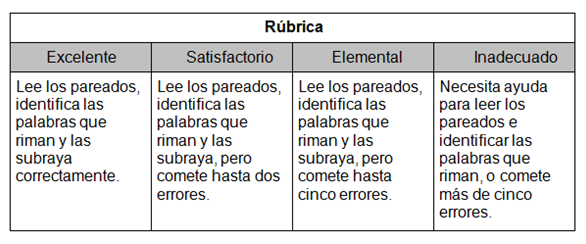Pinchando en las celdas 1, 2, 3 y 4.
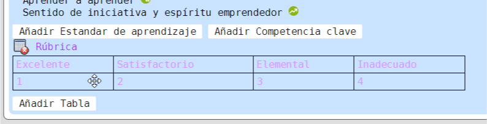(Atención, como anteriormente, no sale puntero sino cursor de mover)
En el ejemplo, pulsamos en el 1, sale el editor y copiamos-pegamos el texto borrando el número 1 y “Aceptar”. Queda así:
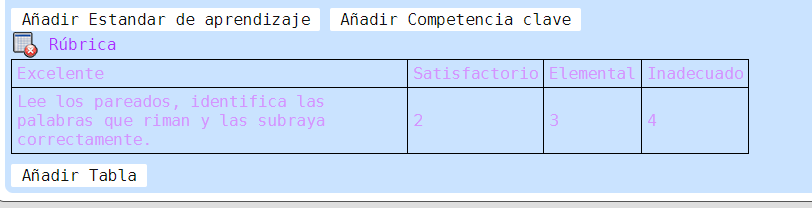Repetimos la misma operación para los 4 niveles de Rúbrica (Excelente, Satisfactorio, Elemental e Inadecuado).
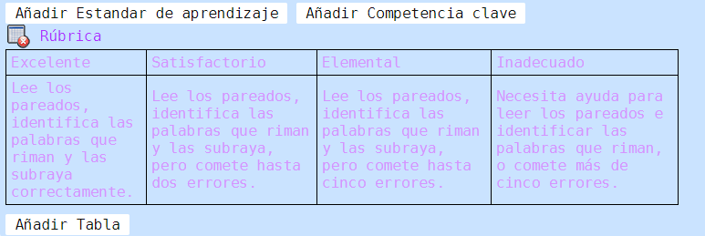Y ya estará completa la Tabla.
Si queremos modificar una de las celdas de la tabla pinchamos sobre la misma y salta el cuadro de edición de texto, modificamos lo deseado y “Aceptar”.
Si queremos borrar toda la tabla, vemos que existe un botón rojo con una x blanca como en las Unidades y en las Preguntas, funciona de la misma manera.
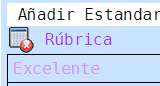Pulsando en el mismo (también sale cursor de mover en lugar de puntero) da la opción de “Eliminar tabla”.
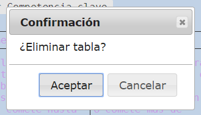Lo primero que tenemos que tener en cuenta es algo que ya se menciona en la introducción de este manual.
El propósito principal del módulo EVAL de los libros consiste en que el profesor disponga de una serie de materiales:
Es muy importante por tanto que el contenido sea editable. Esto afecta principalmente al uso de imágenes. Lo correcto es usar imágenes sólo cuando sea imprescindible. En cualquier otro caso hay que usar texto. De esta forma conseguiremos que, si el profesor lo desea, sea posible la edición para la personalización de las preguntas.
Primero vamos a explicar cómo introducir imágenes en preguntas que son muy visuales y no existe la posibilidad de usar texto.
Este es el método que se usa en preguntas como la de este ejemplo:
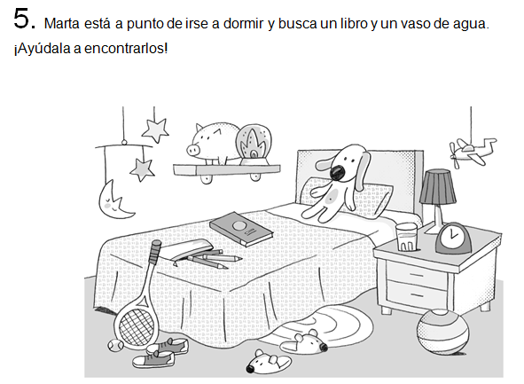Este sería el enunciado tal cual aparece en el Word facilitado. El texto de enunciado lo copiaríamos pegaríamos en el botón Editar texto enunciado y la imagen la añadiríamos directamente con el botón Añadir imagen en enunciado.
Vemos los pasos, primero:
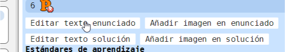Sale la ventana del CKEditor:
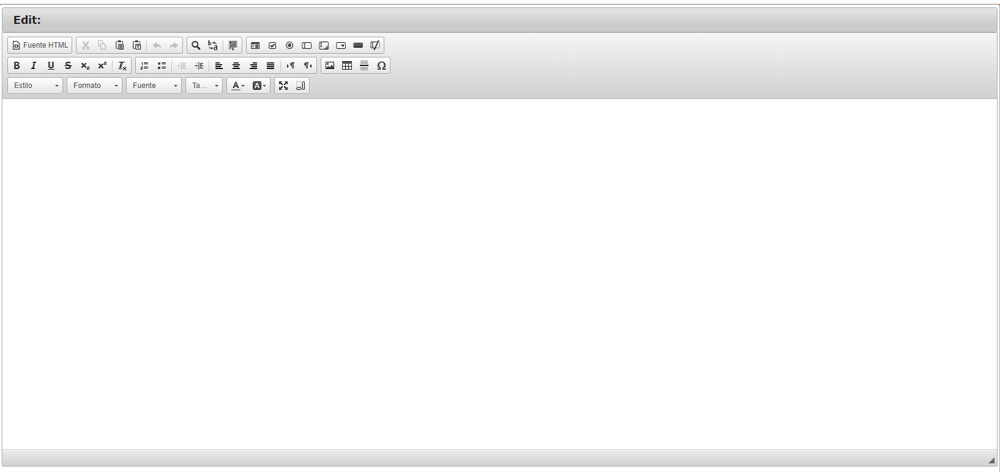Antes de pegar el texto, hay que asegurarse de que este no lleve ningún formato o imagen asociado (de hecho si pegamos inadvertidamente una imagen esta no se va a ver en el editor). El motivo es que todo lo que peguemos que no sea texto puede afectar al archivo JSON final provocando errores en el mismo. Como habitualmente vamos a copiarlo de un documento Word o .pdf, y estos tipos de documentos llevan formatos asociados e imágenes, hay que pasarlo a texto plano primero.
Por ello al pegar texto en la aplicación este editor no permite el pegado directo con el menú del botón derecho del ratón / pegar. Cada vez que realicemos esta operación va a saltar un cuadro de dialogo como este:
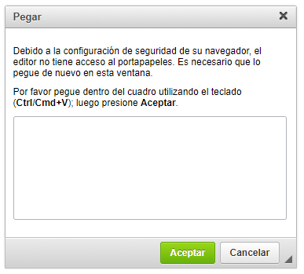La operación hay que realizarla con Ctrl + V y pulsar “Aceptar”.
Pero si lo hacemos de este modo no evitamos que las posibles imágenes arrastradas inadvertidamente se peguen con el posible problema que producen.
Para pegar el texto de forma absolutamente segura hay que hacerlo mediante el botón:
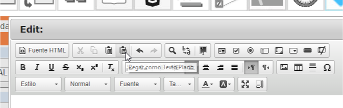Sale el cuadro de dialogo:
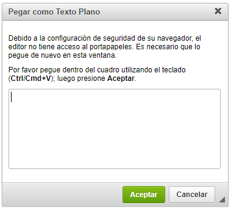Ctrl + V y pulsar “Aceptar”
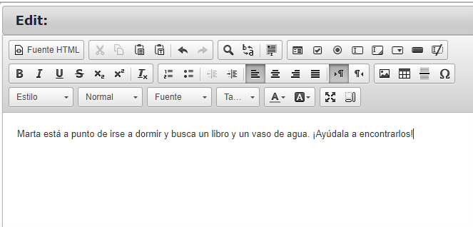Normalmente el texto se dejará así, a no ser que la Editorial haya solicitado una fuente específica, o haya que introducir algún formato como negrita, cursiva, etc. Esto lo veremos en detalle cuando expliquemos las funciones en detalle del CKEditor. Pero en el caso del ejemplo planteado quedaría sin formato alguno en el CKEditor.
Pasamos a la imagen:
Previamente hay que sacar la imagen del texto de Word original, tiene que ser una imagen de formato .png. La herramienta de recorte de Windows es válida, pero pueden usarse otros programas como Photoshop, etc. De esta tarea puede encargarse previamente otra persona para acelerar el proceso (extrae todas las imágenes de preguntas soluciones y las deja en una carpeta ad hoc).
Una vez recortada y en una carpeta a la que tengamos acceso.
Al clicar en “Añadir imagen en enunciado” nos aparece una ventana del explorador de Windows donde localizaremos la imagen previamente preparada.
Hacemos clic en “Abrir”.
Con lo que ya tenemos el enunciado y la imagen, pasamos a la solución.
En el Word original tenemos.
Realizamos la misma operación con la imagen de solución que con la de enunciado. Clic en “Añadir imagen solución”.
Sale la ventana del explorador de Windows y seleccionamos la imagen correcta.
Añadimos como vimos antes los Estándares de aprendizaje y las competencias clave y como resultado…
Ya tendríamos la pregunta finalizada.
Este sería el tipo más básico de preguntas/soluciones que son las que no requieren un manejo más profundo del CKEditor.
Es el programa de edición de texto del que disponemos para trasladar las preguntas facilitadas por la Editorial al entorno web (EVAL).
Es un procesador de texto avanzado, con muchas funciones, pero no es equivalente a Word. Esto implica que muchas de las cosas que aparecen en los documentos de facilitados por la editorial no se pueden trasladar directamente a CKEditor.
Permite ver el código HTML que generamos con el texto introducido en el área de texto.
Cortar / Copiar / Pegar / Pegar como texto plano / Deshacer / Rehacer.
Realizamos las funciones habituales de estos comandos. Ya hemos visto la importancia de pegar como texto plano.
Buscar / Reemplazar / Seleccionar Todo
Para buscar y reemplazar cadenas de texto, como habitualmente en los programas de edición de texto. Seleccionar todo selecciona todo lo introducido en la ventana de texto.
Es el área para crear formularios, pero dado que el propósito del módulo EVAL no es interactivo sino la impresión de preguntas para alumnos tiene un uso marginal.
Negrita / Cursiva / Subrayado / Tachado / Subíndice / Superíndice / Eliminar Formato.
Permiten dar este tipo de formatos a los textos.
Numeración / Viñetas / Disminuir Sangría / Aumentar Sangría / Alinear a Izquierda / Centrar / Alinear a Derecha / Justificado / Dirección del texto de izquierda a derecha / Dirección del texto de derecha a izquierda.
Con Numeración creamos listas numeradas, con Viñetas listas de viñetas (como ya dijimos, no es funcional, hay que crearlas a mano), disminuir/ aumentar sangría y el resto de los botones de justificación/dirección del texto tienen la función habitual de los procesadores de texto.
Imagen / Tabla / Insertar Línea Horizontal / Insertar Carácter Especial.
En este grupo están los botones más importantes para dar formato adecuadamente al texto para la distribución de la pregunta. Especialmente Imagen y Tabla que permiten la integración imagen, texto y distribución de este último de forma óptima en la pregunta. Mencionar también que Insertar Carácter Especial permite la visualización de todos los caracteres posibles que no son texto en el programa (especialmente útil en las preguntas de matemáticas).
Estilos para formatear / Formato / Fuente / Tamaño
El botón de estilo tiene una función muy importante en la alineación de imágenes al texto.
Formato, habitualmente debe estar en Normal. Fuente permite cambiar la fuente del texto a la solicitada por la Editorial. Si no cambiamos estos dos aspectos, la fuente que aparece en la plataforma EVAL es la definida por la Editorial, con lo que sólo se han de cambiar en situaciones específicas. Tamaño, varía el tamaño de la fuente.
Color de Texto / Color de Fondo
Cambian el color de la fuente.
Maximizar / Mostrar bloques
Maximizar, hace que la ventana del CKEditor ocupe todo el espacio posible del navegador. Y mostrar bloques muestra los párrafos HTML en el editor.
En la parte inferior de la ventana tenemos:
Yes / No
Yes cierra la ventana del editor manteniendo los cambios que hayamos realizado y No la cierra sin guardar los cambios.
Con las últimas novedades del programa, se pueden añadir imágenes integradas con el texto. Para poder hacerlo previamente han de estar en el repositorio. Es decir, primero tenemos que comitear previamente todas las imágenes dentro del repositorio y luego entrar al CAT, updatear (nube) y ya estarían preparadas para el proceso.
Para añadirla de forma correcta integrada en el texto pulsaríamos el botón:
Aparece el siguiente cuadro de dialogo:
Seleccionamos la imagen deseada. Después de hacerlo es importante que verifiquemos que el en el campo URL aparece la dirección.
Pulsamos “Aceptar” y la imagen ya aparece en el campo de texto.
Si vamos a repetir la imagen (hay que ponerla varias veces en una pregunta o en preguntas diferentes, por ejemplo una pauta de escritura) copiando y pegando esta URL evitamos tener que volver a seleccionar la imagen.
La imagen siempre se va a posicionar en el punto en que esté el cursor y se alinea con el texto.
Hay tres formas de integrar una imagen en el texto:
Dependiendo de la forma en que se quiera integrar posicionaremos el cursor en el sitio adecuado.
Eligiendo Imagen centro queda alineada con el texto.
Para insertar una tabla en el cuadro de texto de CKEditor hay que pulsar el botón tabla:
Aparece el cuadro de Propiedades de la Tabla:
En el mismo se puede definir:
Cuando la tabla ya está creada al pulsar botón derecho ratón sobre cualquier celda de la misma aparece el siguiente menú:
Si queremos conseguir varios cuadros que contienen texto (o en blanco para rellenar) distribuidos por la pantalla tenemos que usar una tabla invisible. Dentro de las celdas crearemos mini-tablas de 1 fila por 1 columna que serán los cuadros de texto. Aquí de cara a la distribución de los cuadros cobra importancia la alineación de la tabla izquierda, derecha y centro.
Un ejemplo:
En el entorno web se ve así:
Tabla típica con fila de títulos en color (gris).
Tabla de imágenes (bordes visibles).
Tabla de imágenes (bordes invisibles). En la imagen se ven difuminados, pero tanto en el entorno web como en la impresión final no se verían.
Tabla con tablas anidadas (tablas dentro de una tabla), las interiores con bordes visibles las exteriores invisibles. Con esto se genera un efecto de cuadros de texto flotantes.
Otro ejemplo de tabla invisible con tablas anidadas que tiene como efecto cuadros de vacíos para marcar.
Otro ejemplo de lo mismo con cuadros de numeración (en este caso enunciado y solución).
Enunciado:
Solución:
Ejemplo de tabla invisible con imágenes (flechas y pautas) para simular una lista de alineación perfecta.
En esta lista vamos a definir una serie de conceptos a tener en cuenta para el resultado final.